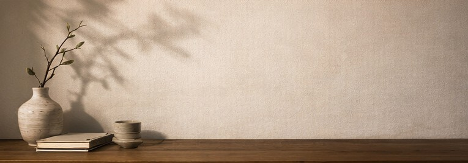

设计愿景
Design Vision
不仅是网站，
更是一场身体美学实验。
本项目的灵感来源于对周围人群的观察：在地铁上、咖啡馆里、办公桌前，我们的身体总是处于一种被动的、紧绷的、扭曲的状态。
“体态哲思”试图用最克制的视觉语言，传递最理性的身体知识。我们摒弃了传统医疗网站的恐吓式营销，转而使用艺术与人文的视角，邀请用户重新审视自己与身体的关系。

项目信息
课程名称：网站策划与设计
设计理念：新古典主义与极简设计的融合
开发技术：HTML5 / CSS3 (Grid & Flexbox) / Vanilla JavaScript
团队分工：策划 / 视觉设计 / 前端开发